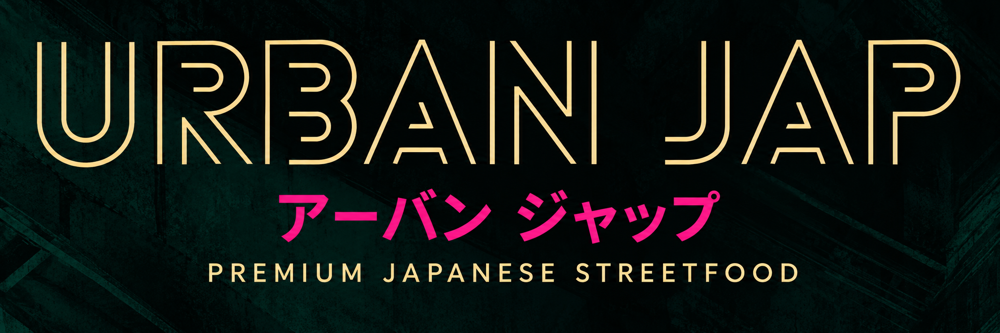

Restauration
Urban Jap vous proposera une offre de restauration sur place.
Le menu et les détails seront bientôt disponibles.
Découvrir Urban Jap sur Instagram ↗
Urban Jap vous proposera une offre de restauration sur place.
Le menu et les détails seront bientôt disponibles.
Découvrir Urban Jap sur Instagram ↗